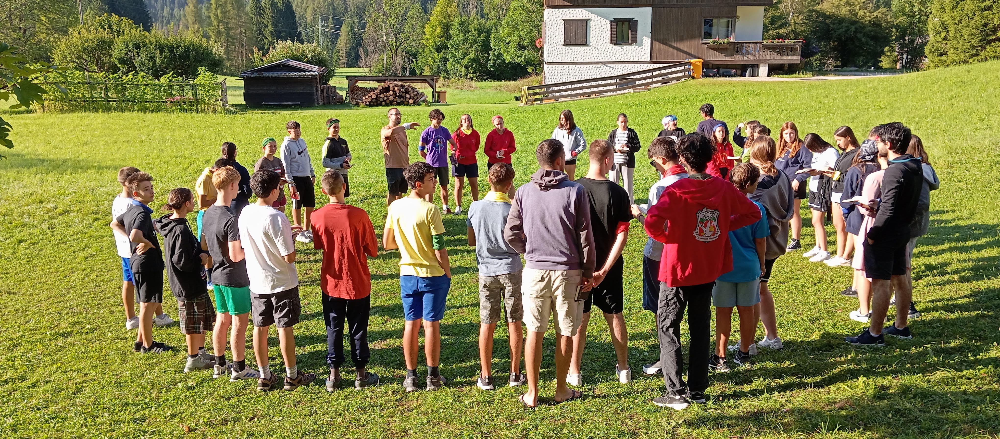

Il catechismo della parrocchia accompagna ogni anno circa 100 bambini e ragazzi, dalla Prima Comunione fino al cammino verso la Cresima.

È un percorso che si sviluppa durante la settimana, attraverso incontri pensati per ogni età, in cui i ragazzi vengono aiutati a conoscere la fede, a fare esperienza della comunità e a crescere anche nelle relazioni e nella vita concreta.
Accanto agli incontri, un momento fondamentale è la partecipazione alla Messa domenicale delle 11.30, pensata in modo particolare per i ragazzi: non solo un appuntamento, ma un luogo in cui sentirsi parte della comunità e vivere ciò che si scopre durante il cammino.
Il catechismo non è solo preparazione ai sacramenti, ma un’esperienza di crescita che coinvolge tutta la persona, dentro una comunità che educa, accompagna e sostiene.